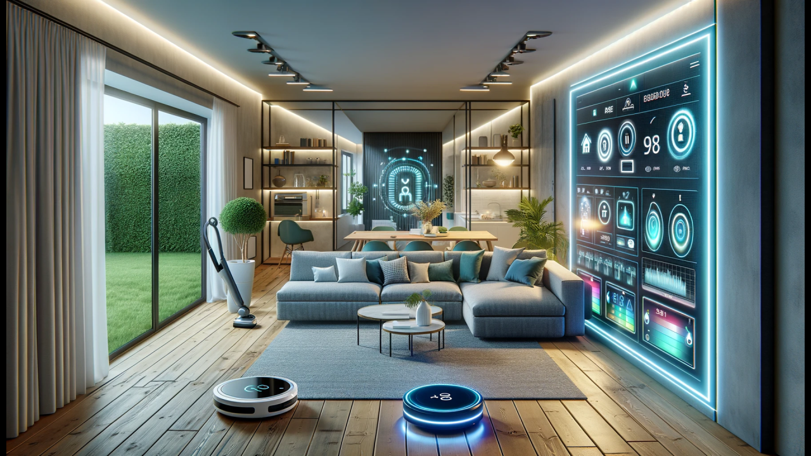
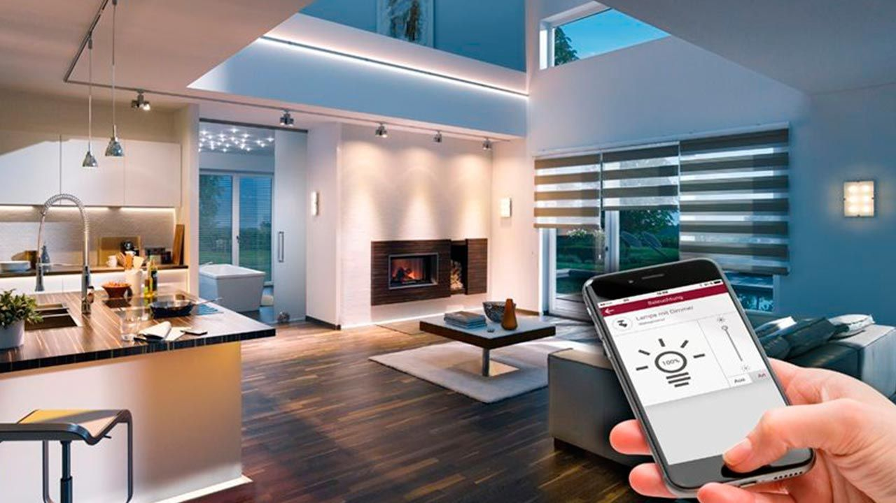
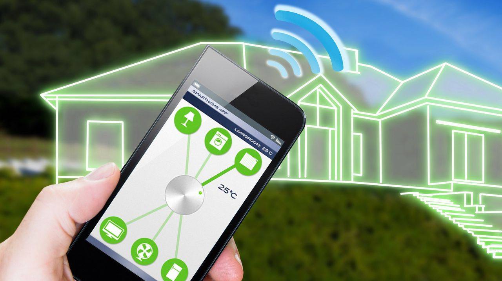
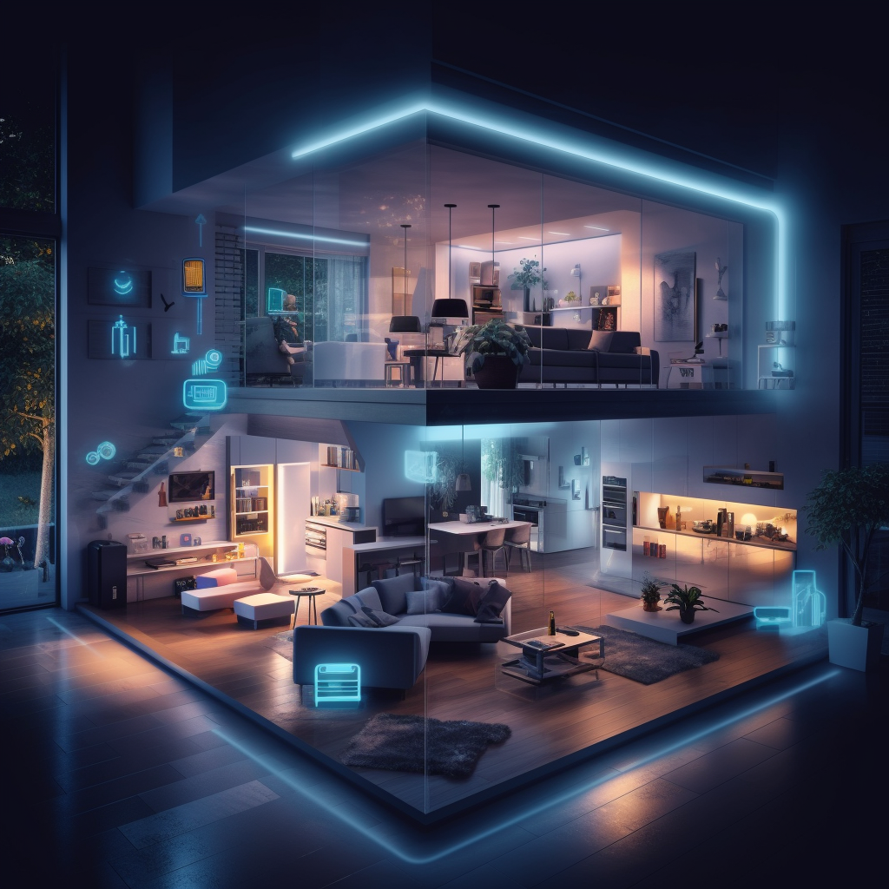
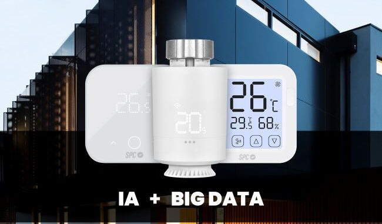

Domótica en los hogares





La inteligencia artificial (IA) está transformando la domótica en el hogar, creando entornos más inteligentes y eficientes. Los sistemas de IA integran dispositivos y electrodomésticos conectados, permitiendo la automatización y el control remoto de funciones como iluminación, climatización, seguridad y entretenimiento. Asistentes virtuales como Alexa, Google Assistant y Siri utilizan IA para responder a comandos de voz, gestionar rutinas diarias y controlar otros dispositivos inteligentes. La IA también permite el aprendizaje de patrones de comportamiento, ajustando automáticamente las configuraciones del hogar para optimizar el consumo de energía y mejorar la comodidad. Además, los sistemas de seguridad inteligentes, equipados con cámaras y sensores avanzados, utilizan IA para detectar y responder a posibles amenazas en tiempo real. Aunque la IA en domótica ofrece numerosas ventajas, plantea desafíos en términos de privacidad y seguridad de los datos personales. En resumen, la IA en la domótica promete hogares más seguros, cómodos y eficientes, adaptados a las necesidades individuales de los residentes.
Volver a la Página de Inicio